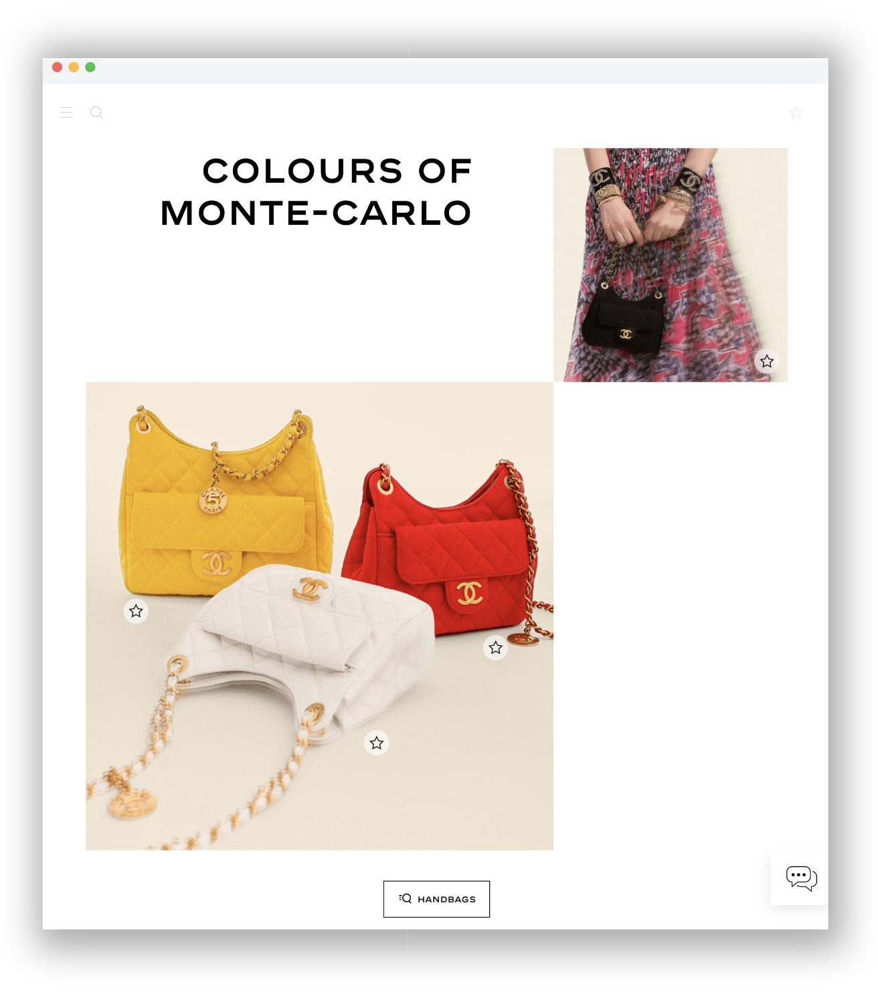

Chanel is a French high-end luxury fashion house founded in 1910 by Coco Chanel in Paris. The brand specializes in women's ready-to-wear, luxury handbags, clothing, and accessories.
Chanel is credited for revolutionizing haute couture and ready-to-wear by replacing structured, corseted silhouettes with more functional garments that women still found flattering.
Discovering Chanel is a website that allows handbag lovers to efficiently view new Chanel handbags and easily create a personalized list of favorites. Users can easily filter and sort the listed products according to their needs by color or by price.
While the current Chanel website features an haute-couture presentation style, the design does not enable users to view all bags, prices, materials, and colors within one page. Users must spend time clicking on each bag to view any additional information. Furthermore, although the current design allows users to create a wishlist, they cannot browse additional bags and see their favorite bags at the same time.
Incorporating these two features would save users browsing time and allow them to compare different favored styles side by side.
Existing Chanel Page

Figure I. The current view of Chanel's handbag page does not show any additional information for bags.
To address the issues seen in the current website design, Discovering Chanel displays a grid of bags with descriptions. Each description shows the bag's name, material, color, pricerange, and price. This allows the users to quickly and easily compare different bags that they like. To adjust the list, users can filter the bags by color and pricerange or sort the bags by popularity or by price on the right.
Furthermore, an "Add to Favorites/Remove from Favorites" button under each bag allows users to efficiently create a list of favorites. They can view the items and the total price of their favorite bags on the right.
Discovering Chanel Page
Figure II. The redesigned Discovering Chanel page
Throughout this project, I learned to identify issues on a current website and brainstorming different methods to resolve those issues. Furthermore, I learned to use React and JavaScript to allow users to filter and sort a list.